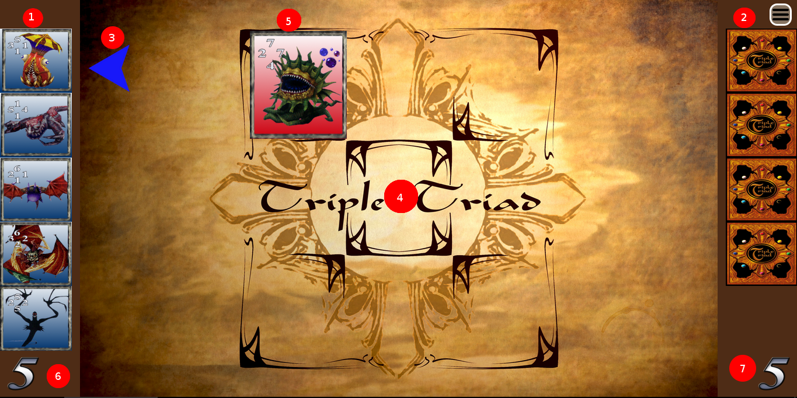
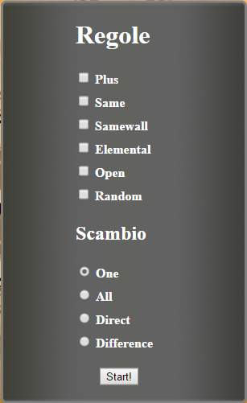
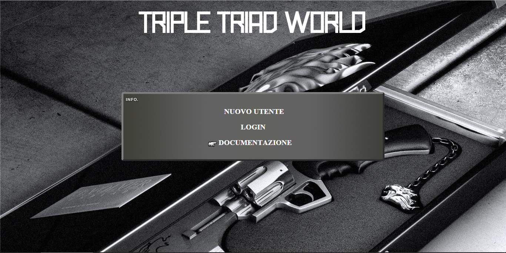
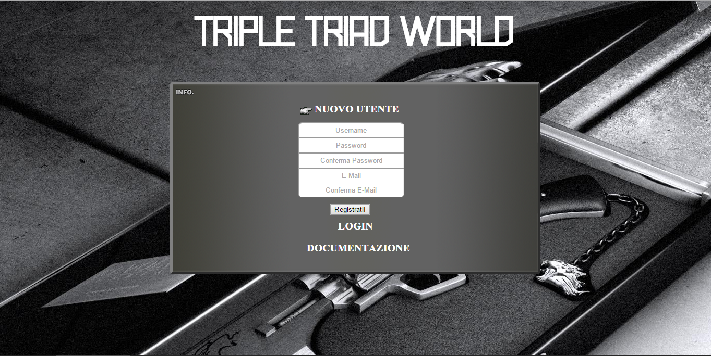
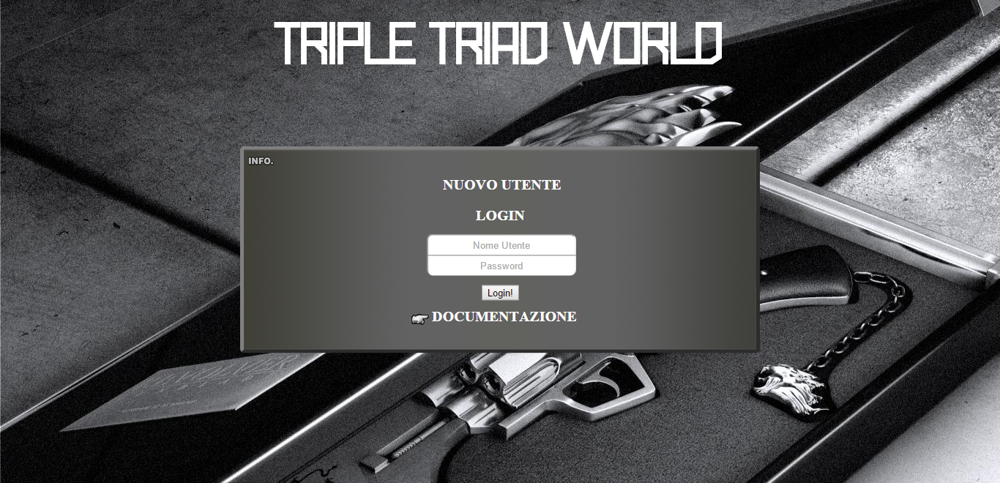
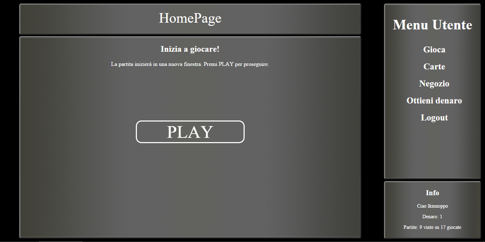

Manuale utente
Cosa è Triple Triad World:
L'applicazione web Triple Triad World è un gioco di carte collezionabili che ha fatto il suo debutto nel famoso videogioco Final Fantasy 8. Lo scopo del gioco è posizionare le carte in una tabella 3x3 e conquistare quante più carte possibile dall'avversario
Le regole:
Le regole di Triple Triad sono poche e semplici:
- Si gioca sempre in due.
- Ogni giocatore inizia la partita con 5 carte in mano, scelte liberamente dal proprio mazzo.
- Si può posizionare la propria carta in qualsiasi punto della tabella, purché esso sia libero.
- Ogni carta ha quattro valori, uno per ogni lato: superiore, inferiore, sinistro e destro.
- Alcune carte hanno un elemento magico; gli elementi possibili sono: fuoco, luce, veleno, ghiaccio, acqua, vento e terra.
- Si conquista una carta dell'avversario quando si posiziona una propria carta in una posizione adiacente e tra i due valori che combaciano, quello della propria carta dev'essere il maggiore.
- La partita può finire in parità.
- Il vincitore della partita ha diritto ad una o più carte dell'avversario, a seconda della variante scelta.
Il campo di gioco:
Leggenda:
- Carte del giocatore.
- Carte dell'avversario.
- Indicatore del turno.
- Tabella di gioco
- Carta in possesso dell'avversario (in rosso)
- Punti del giocatore
- Punti dell'avversario
Le varianti:
- Plus: quando questa regola è attiva si possono conquistare due carte assieme posizionando una carta in modo che sia adiacente ad entrambe; se la somma dei valori adiacenti da un lato è uguale alla somma dei valori dell'altro lato, allora si ha un plus e si conquistano le due carte adiacenti. Per fare un plus almeno una delle due carte adiacenti dev'essere dell'avversario
- Same: quando questa regola è attiva si possono conquistare due carte assieme posizionando una carta in modo che sia adiacente ad entrambe; se i valori adiacenti sono uguali, si ha un same e si conquistano le due carte adiacenti. Per fare un same almeno una delle due carte adiacenti dev'essere dell'avversario
- Samewall: quando questa regola è attiva, ai fini della regola Same i bordi della tabella, detti muri, contano come 10 (il 10 viene sostituito in gioco dalla lettera A)
- Elemental: quando questa regola è attiva, viene assegnato un elemento a posizioni casuali della tabella di gioco; se viene posizionata una carta con un elemento diverso (o che non ha un elemento) ai fini della regola base per conquistare una carta, i valori della carta sono decrementati di uno. Se viene posizianata una carta con lo stesso elemento, ai fini della regola base per conquistare una carta, i valori della carta sono incrementati di uno
- Open: le carte dell'avversario sono visibili.
- Random: le carte in mano vengono scelte casualmente dal mazzo, invece che essere scelte dal giocatore.
- One: alla fine della partita il vincitore ottiene come premio una carta dell'avversario
- All: alla fine della partita il vincitore ottiene come premio tutte le carte dell'avversario
- Direct: alla fine della partita ogni giocatore ottiene tutte le carte del suo colore rimaste sul tavolo, indipendentemente da chi vinca.
- Difference: alla fine della partita il vincitore ottiene un numero di carte pari alla differenza tra il suo punteggio e quello dell'avversario (al massimo cinque)
Come utilizzare il sito:
Homepage
La homepage del sito ha un'interfaccia semplice; ci sono tre tasti: registrati, login e documentazione. Il primo permette di aprire l'interfaccia di registrazione, il secondo quella di login, il terzo apre questa pagina.
Registrazione
Ci sono cinque campi:
- Username: vanno inseriti caratteri alfanumerici (non accettati caratteri come $%_-@ etc)
- Password: va inserita la password scelta per proteggere il proprio account
- Conferma Password: va confermata la password per evitare di aver sbagliato precedentemente
- E-Mail: va inserita la propria e-mail per ricevere eventuali comunicazioni dal sito.
- Conferma E-Mail: va confermata la propria e-mail per evitare di aver sbagliato precedentemente
Login
In questi due campi vanno inseriti l'username e la password precedentemente registrati
Pagina principale
La pagina principale è divisa in due sezioni: quella centrale e quella laterale. In quella centrale compariranno i contenuti con cui l'utente potrà interagire, scelti dalla sezione laterale. In quella laterale c'è un menu che permette la navigazione nel sito.
Gioca
Cliccando su gioca comparirà al centro della pagina un testo di conferma. Verificato che il giocatore possieda almeno cinque carte (in caso contrario verrà visualizzato un messaggio di errore) si aprirà in una nuova finestra la schermata di gioco, descritta in precedenza. Per selezionare le varianti basta selezionare le caselle corrispondenti e premere il pulsante "Start!". Se si è scelta la regola random le carte verranno scelte per l'utente, in caso contrario apparirà una finestra con a sinistra un elenco coi nomi delle carte e la quantità posseduta di ciascuna, e a destra un'anteprima delle stesse. Cliccando col tasto sinistro del mouse sui nomi si prenderà la carta in mano, cliccando col tasto destro del mouse sui nomi si toglierà la carta dalla mano. Una volta scelte cinque carte si potrà confermare cliccando sul bottone verde in basso a destra. Per giocare una carta bisognerà cliccarci sopra mentre è in mano: la si vedrà spostarsi leggermente a destra; dopodichè bisognerà cliccare su una posizione libera e la carta sarà stata giocata. Prima di cliccare bisognerà essere certi della propria mossa, perchè non sarà possibile annullarla. Alla fine della partita se il giocatore avrà vinto, gli sarà mostrata una schermata per selezionare le carte vinte dall'avversario. Basterà cliccare sopra la carta desiderata, che otterrà un bordo rosso, e poi premere il bottone di conferma. In alto a destra si trova un bottone che, una volta cliccato, permetterà l'apertura di una barra laterale, da cui si potrà attivare la musica di gioco e chiudere la schermata. Premere nuovamente il bottone causerà la chiusura della barra
Carte
Il tasto carte aprirà una schermata in cui sarà possibile osservare le carte in proprio possesso
Negozio
Nel negozio sarà possibile comprare delle carte casuali, il cui prezzo dipende dal livello scelto. Ogni carta ha un livello, che indica la grandezza dei suoi valori di gioco. Nel negozio si potrà scorrere il livello desiderato con le frecce direzionali sulla tastiera o con le frecce sullo schermo e comprare una carta casuale di quel livello con il tasto invio o con il bottone compra sullo schermo. Per i giocatori che hanno appena iniziato si consiglia di comprare carte di livello basso, in quanto il denaro inizialmente in proprio possesso è poco
Ottieni denaro
Il denaro si può ottenere in due modi: il primo è vincendo carte dall'avversario; per ogni carta vinta si guadagna un'unità di denaro, per ogni carta persa se ne perde altrettanto. Il secondo modo è cliccando sulla scritta Ottieni Denaro, che porterà l'utente su una pagina pubblicitaria in cambio di 10 unità di denaro. Sarà possibile ottenere denaro in questo modo soltanto una volta al giorno.
Logout
Premendo su questo tasto si chiuderà la sessione di gioco corrente.
Info
Nella casella delle Informazioni si potrà vedere la quantità di denaro posseduta e il rapporto tra vittorie e partite giocate.